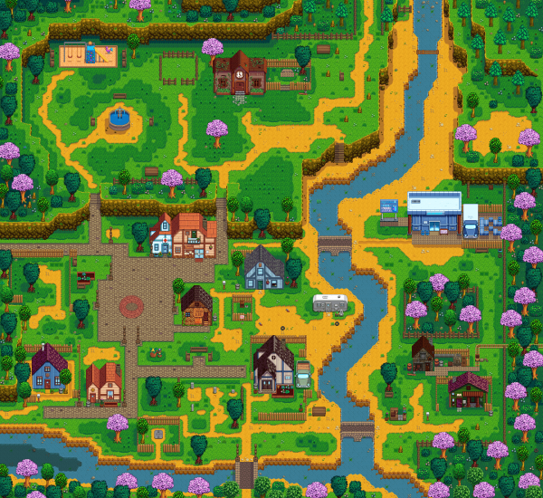
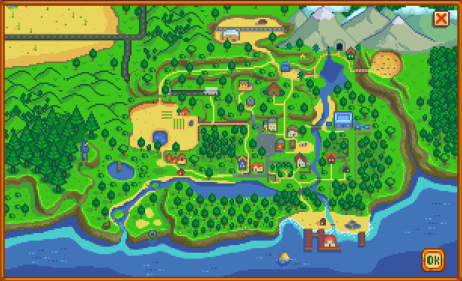
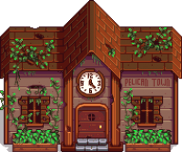
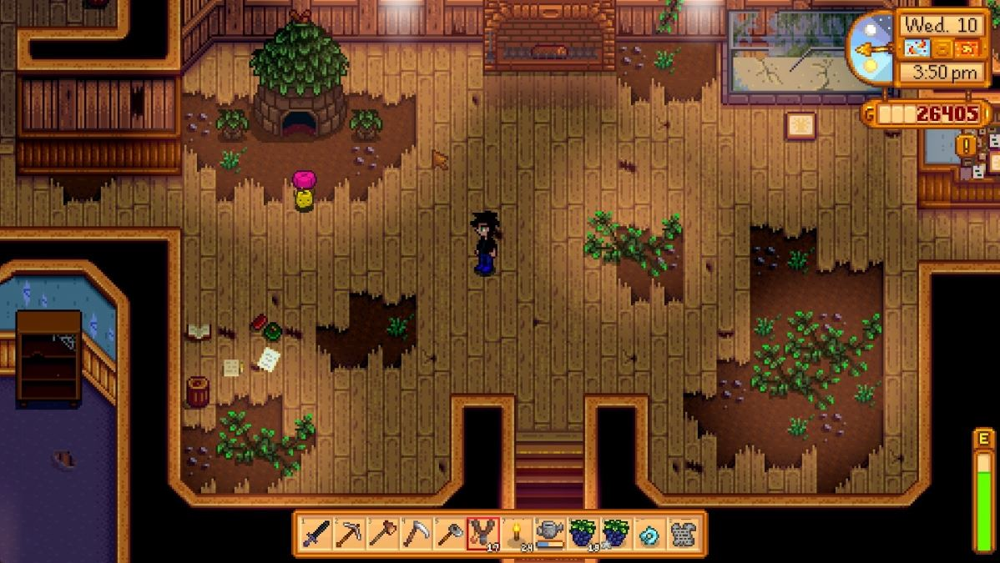
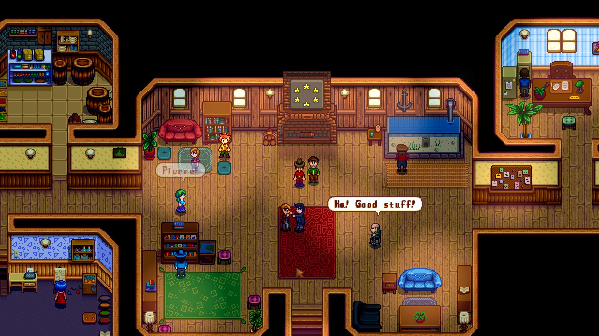

Welcome to Town!
The folks around town are all interested in the new farmer! Many of them have shops and sell items that help you, and if you become friends with them, they like sending gifts to you in the mail!
Above is the Town Square.
Upon arrival you're given a map of town and the surrounding land.
The map is shown below.

You've also been given a big task of restoring the town's Community Center!
Within the Community Center there are bundles to turn in specific items for the different rooms.
|  |  |
| Unfinished Community Center | Completed Community Center |